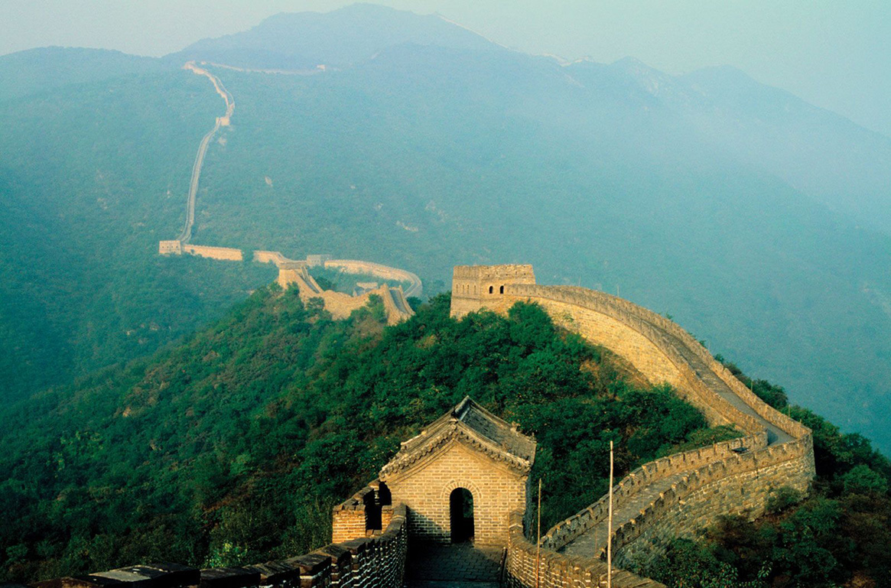

Wielki Mur Chiński
Jedno z największych dzieł architektury świata, symbol Chin i ich bogatej historii.

Historia i znaczenie
Wielki Mur Chiński to system forteczny zbudowany w północnych Chinach w celu ochrony przed najazdami plemion koczowniczych. Jego budowa trwała ponad 2000 lat, od VII wieku p.n.e. do XVII wieku n.e.
Interesujące fakty:
- Długość muru wynosi około 21,000 km
- Widoczny z kosmosu tylko przy pomocy instrumentów
- Zbudowany przez miliony robotników
- UNESCO wpisało go na listę światowego dziedzictwa w 1987 roku
Informacje techniczne:
| Lokalizacja: | Chiny |
| Wysokość: | 5-14 metrów |
| Szerokość: | 4-8 metrów |
| Okres budowy: | VII w. p.n.e. - XVII w. n.e. |